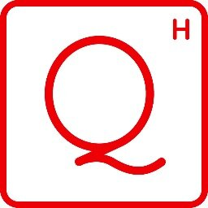

Upcoming F# events - learn Suave, FsLab & more!
Some people in the F# community have reputation for traveling too much. I do not know how that is possible, but as it happens, I will be visiting a couple of places in June and doing a number of talks, workshops and courses. So, if you are thinking about getting into F#, web development with F# using the amazing Suave library, playing with the new trendy F# to JavaScript compiler called Fable, or learning about the recent features in FsLab and Ionide, then continue reading!

The map includes all my travels, but not all of the pins are for F# events. I'm visiting Prague just to see my family (even though there is a new awesome F# meetup there) and my stop in Paris is attending Symposium for the History and Philosophy of Programming (although we might still do something with the local F# group too).
Workshops and trainings
I'm not going to say that one or two day F# event will make you an expert, but the fsharpWorks testimonials say some very nice things about our trainings and workshops. If you want to learn about F#, finance and web development, there are three upcoming options.
Functional Web Development with F# and Suave, 23 June, NYC

One of the myths about F# and functional programming is that it is only good for complex mathematics. This could not be further from truth and the Suave project enabled a lot of interesting use cases for F# on the web.
If you want to learn more, come to my hands-on F# workshop in New York! You'll learn about writing asynchronous composable web servers and services with F#, but also about more complex reactive web applications.
- The workshop is on June 23 in Jet.com offices in New York
- Register here or drop me an email for group booking or diversity discounts
FastTrack to F# in London, 30 June, London

FastTrack to F# is our acclaimed F# training that covers everything ranging from the F# syntax and essential functional ideas to more advanced F# concepts.
In just two days, we'll look at a number of practical F# applications in areas such as data anlytics, domain driven design, testing, asynchronous programming and concurrency.
- The course is at SkillsMatter in London on 30 June - 1 July
- Drop me an email to get 10% discount or for in-house trainings
F# and Functional Programming in Finance, starting 6 June, Online
If you are not close to London and New York, you can attend an online F# in finance training that we did together with QuantsHub. This is 6-lecture course that you can take over 6 months, or at your own pace.
The course starts from F# basics and focuses on topics relevant for financial computing with F# such as analyzing data with FsLab, building domain-specific languages and integrating F# with larger .NET systems.
- Register at QuantsHub for the self-paced or the 6-month version
- Drop me an email for in-house training requests
Conference and user-group talks
Aside from the 3 workshops or trainings, I'll be also speaking at a couple of conferences and user group events during the trip. I'm very happy to be coming to NDC Oslo again. It is a fun conference and they also produce awesome recordings - you can catch some of the past talks by me and my fellow fsharpWorks colleagues here.
Aside from NDC and user groups, I'll be presenting a paper on F# Data at the PLDI 2016 conference in Santa Barbara and I'll be attending Symposium for the History and Philosophy of Programming. As you can see from a few of my blog posts, this is a recent interest of mine.
NDC Oslo: Data analysis with F#, 10 June, Oslo

I'll be coming to NDC Oslo again, this time talking about some of the new technologies in FsLab, Ionide and MBrace. You'll see how F# lets you nicely scale the interactive and explorative programming style that makes it so powerful from small data you can process locally to Big Data computations in the cloud.
F# SF: Celebrating New Year's eve with Suave, 14 June, San Francisco

I'll talk about a fun project I did for New Year's eve, which tracks Happy New Year messages from all over the world on Twitter. The project was done using Suave and F# agents and it is a fun example of reactive and asynchronous web application. If you are interested in reactive programming and web, this talk is for you!
F# Portland: Hacking web with Suave and Fable, 20 June, Portland
We are also planning an event at the F# meetup in Portland. This will be more hands-on and we will be looking at all the new web libraries and tools that are available for F#. Aside from the Suave web server, we will also look at Fable which is a new F# to JavaScript compiler that integrates nicely with the modern JS ecosystem.
Haskell NYC: Coeffects & Context-aware programming, 22 June, NYC

While in New York, I will be also visiting the Haskell user group to talk about my work on coeffects. The details will appear on the meetup page soon. Coeffects are the topic of my PhD thesis - it is a theory of capturing context (say, physical context such as GPS sensors or printers) in programming languages. The formal model of coeffects uses comonads, so even though I'm not an active Haskell programmer, this sounds like a good fit for the Haskell meetup! In the meantime, check out my interactive web page on coeffects.
Published: Tuesday, 31 May 2016, 9:51 AM
Author: Tomas Petricek
Typos: Send me a pull request!
Tags: c#, f#, functional programming, talks